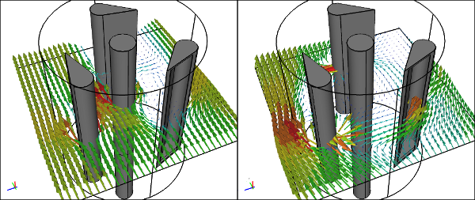

Simulate Free Surface Flows Using a Volume of Fluid CFD Solver
The latest release of Caedium (v4.0) can perform Computational Fluid Dynamics (CFD) simulations for free surfaces, such as those that form between water and air around a ship's hull. Also the new version of Caedium contains an extensive array of other enhancements that will help you efficiently simulate more physically realistic phenomena.
 Caedium VOF CFD Simulation for Wigley HullHigh resolution image
Caedium VOF CFD Simulation for Wigley HullHigh resolution image
{kind=link}
Request and activate a free 30-day trial to enable Computational Fluid Dynamics (CFD) software simulation in Caedium.

Volume of Fluid (VOF)
The new multiphase capability in Caedium uses a VOF solver to simulate the interaction between 2 immiscible fluids and the free surface between them. Applications for which VOF is well suited include:
- Maritime flows, e.g., the combined water and air flow around a ship's hull
- Environmental water flow, e.g., tank filling, wastewater management, spillways, weirs
More Physics
- Simulate rotating machinery (e.g., mixers) with Moving Reference Frames (MRF)
- Simulate porous media
- Simulate fans at boundaries and embedded within a flow domain
- Reduce simulation time and memory requirements with the cyclic boundary condition
Caedium MRF CFD SimulationLeft: Stationary, Right: MRF
Improved Performance
- Run larger simulations on Mac OS X with a 64-bit version of Caedium
- Turn simulations around faster with more aggressive default parallel preferences
- Use Windows HPC Scheduler services in Azure without an on-premise installation of Windows HPC Server
 Caedium Running as a 64-bit Application Under OS X
Caedium Running as a 64-bit Application Under OS X
Better Visualization
- Create stunning visuals with an extensive array of animated particles that includes arrows and cones
- Visualize wall heat flux and density fields when supported by a solver
New Particle Types: Tetrahedra and planar arrows
Miscellaneous
- Enjoy native language translations of Caedium in English, French, German, Italian, Japanese, Portuguese (Brazil), and Spanish
- Exchange membrane flow results with ixForten 4000

Caedium CFD Results Imported into ixForten 4000Model: courtesy of SobreSaliente Ltda
Feedback
Questions? Ideas? Problems?